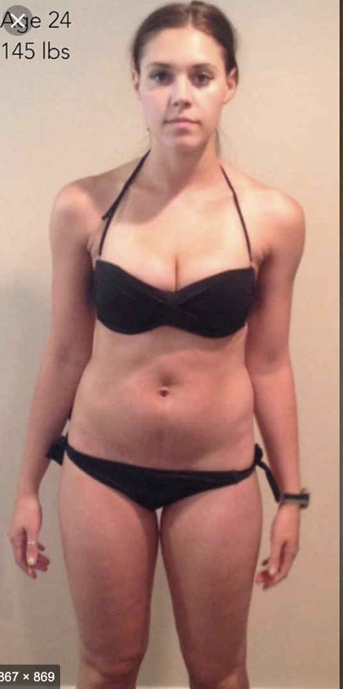

I want to be fat again
Gastric band op means I´m in agony every time I Eat

before
Gaining fat on the skin for thin people is much tougher than loosing weight for overweight people.Most people who want to gain weight make wrong choices and end up with some or the other problem.
To gain weight you will have to first identify the reason behind why you do not gain weight.
It can range very widely like fungal infection, fast metabolism, deficiency of nutrients etc. Once the cause is identified then we eliminate that cause. After which the diet can help you gain weight.
It is important to know more about you and your body to come to a definite diet plan. weight gain is of two types. the unhealthy weight gain is at the stomach (Tummy) while the healthy weight gain is proportional and throughout the body. I am happy that you asked the question of gaining weight under your skin.
the answer actually lies in the food we eat. When we eat food it gets digested and goes to the liver via the portal veins.
The only exception to this is the fat which goes around the body via the lymphatic system. The important thing is to eat some quantity of healthy fat while making some necessary changes in your diet.
Moreover when you miss a meal, you would tend to loose weight quite quickly. this is basically loosing of muscle which is again not good. we should look into all those sort of problems.
after